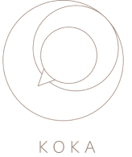
Mentors: Sanja Bencetić
Industrial design 1
2020.
Koka is a mechanism inspired by the movement of chickens. By studying their head stabilization,
I came to the realization that if we hold a chicken in our arms and move it in any direction,
its head will always stay in the same place. Through the mechanism, I wanted to evoke two
movements of the body, up and down and in a circle while the head remains in the same place. The
very form of the mechanism is inspired by Scandinavian design and reduced to basic elements to
make the shape of the chicken recognizable. Due to its interactivity and simplicity of form, the
mechanism can be used as a children’s toy.
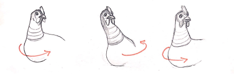
Koka can be used as a kid’s toy. It is simple and fun to play with. The whole model is hand made
using papier mache technique and plywood. Its simplicity is its charm. Koka beckons children
into a world of endless play possibilities. Its handcrafted nature not only ensures uniqueness
but also adds a touch of warmth and character, setting it apart from mass-produced toys. Its
tactile qualities invite exploration and engagement, fostering a sense of wonder and creativity
in every child who interacts with it.
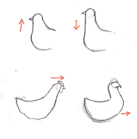
experiments and prototyping
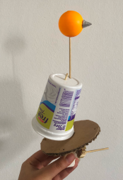
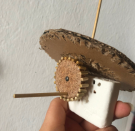
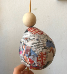
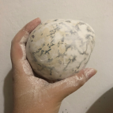
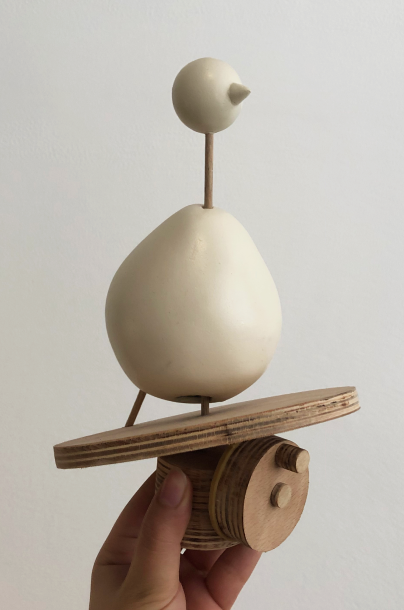
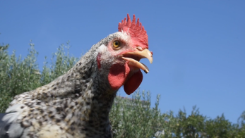
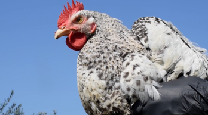
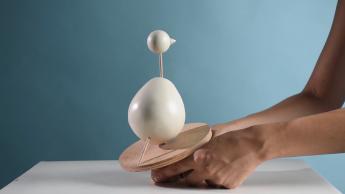
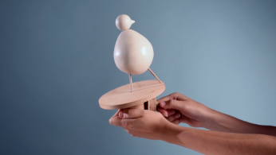
watch video